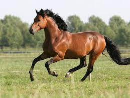
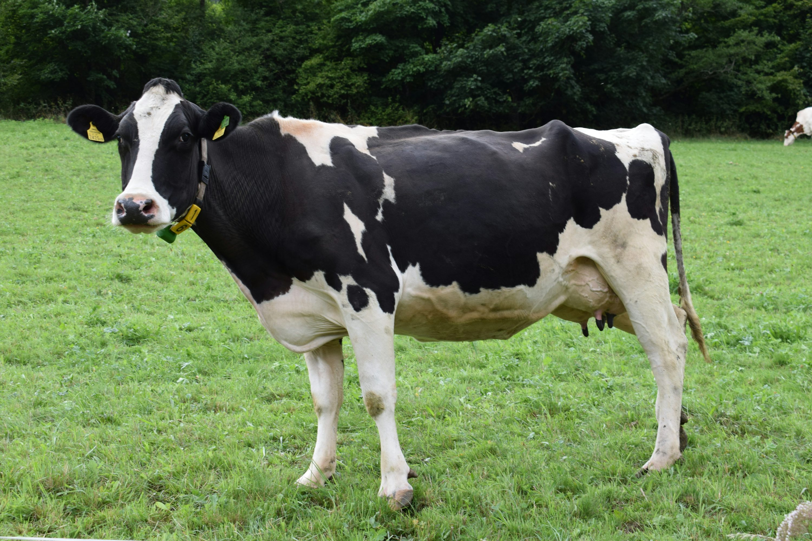
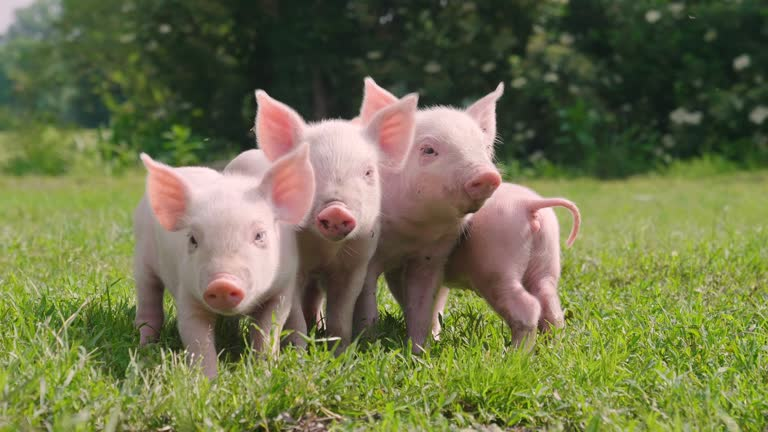
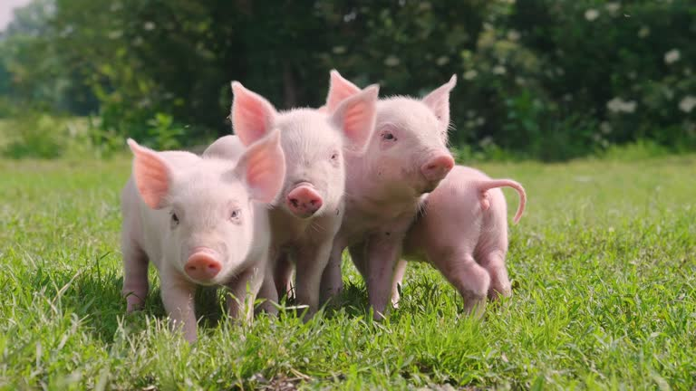
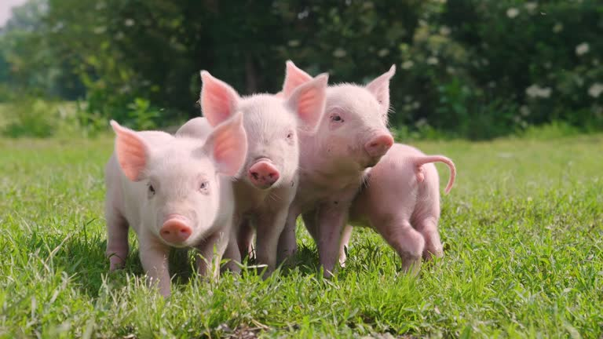

🐄 Cuidado y Bienestar de Animales de Campo
También acompañamos a quienes trabajan con animales grandes. El cuidado veterinario en el campo es esencial para la salud, productividad y bienestar de caballos, vacas, cerdos y ovejas.


 


| 🐎 Caballos | 🐄 Vacunos | 🐑🐖 Ovejas y Cerdos |
|---|---|---|
|
|
|
✨ Un campo sano comienza con animales bien cuidados.